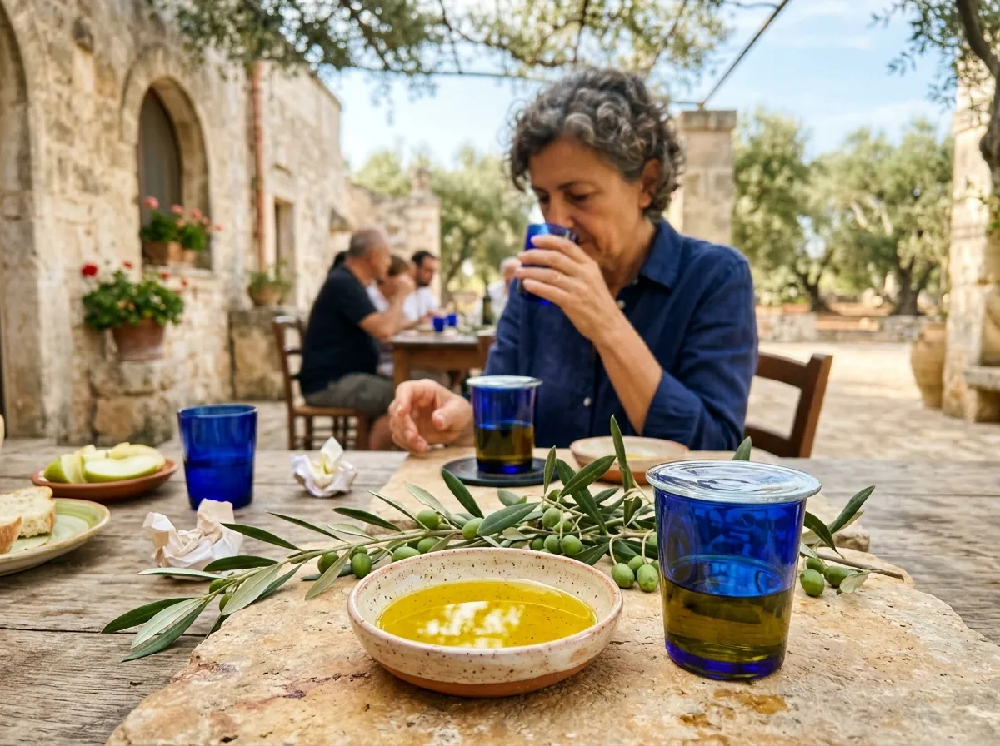
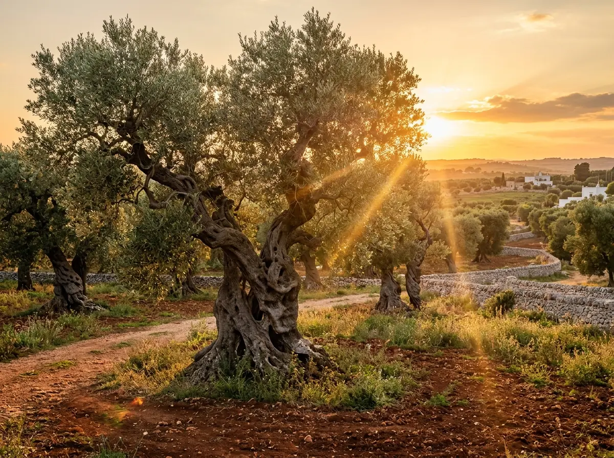
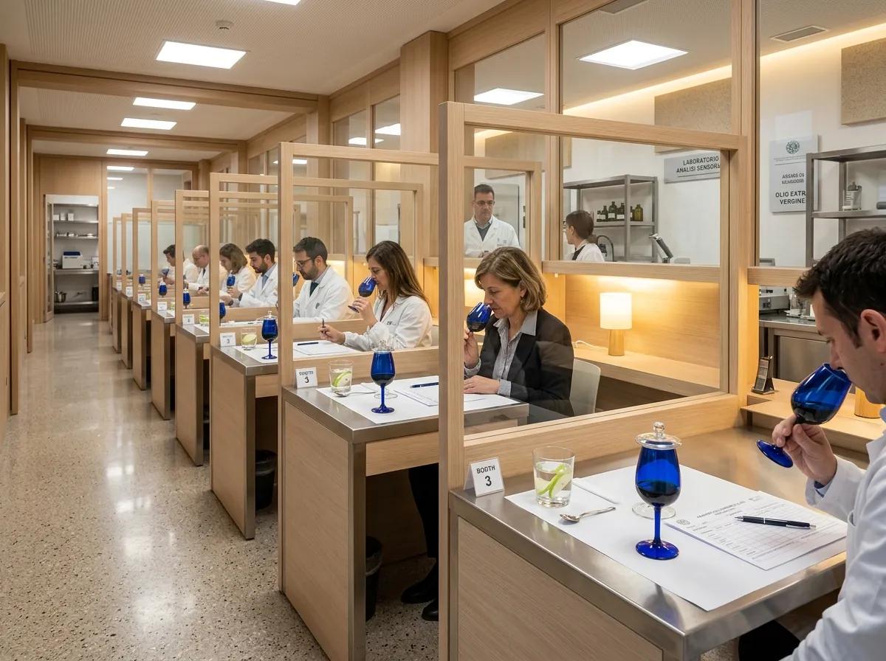
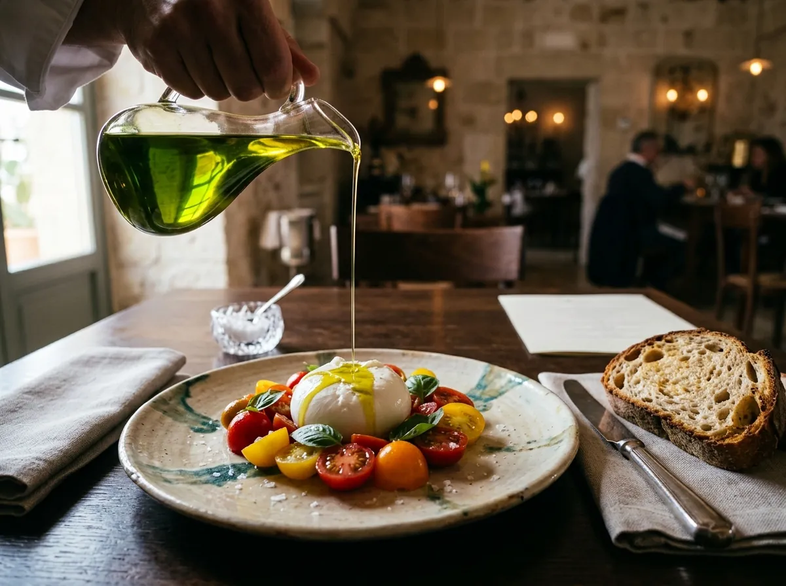
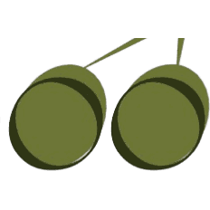

L'istituzione pugliese che unisce il rigore analitico del Panel Test normato COI/UE alla tutela del patrimonio olivicolo mediterraneo. Formiamo assaggiatori professionisti abilitati per l'Elenco Nazionale.

Bicchiere cobalto normato a 28°C e valutazione organolettica delle cultivar pugliesi
Anni di Attività e Storia (Dal 1992 a Bari)
Assaggiatori Abilitati all'Idoneità
Sessioni Conformi a Regolamenti COI/UE
Frantoi e Imprese Olearie Formate
Nata nel 1992 nel cuore di Bari, l'A.M.E.D.O.O. (Associazione Meridionale Estimatori e Degustatori dell’Olio di Oliva) è il presidio scientifico e culturale dedicato alla qualificazione del prodotto principe del Mediterraneo.
La Puglia è la prima regione olivicola d'Italia, culla di cultivar monumentali come la potente Coratina, l'armonica Ogliarola Barese, la complessa Peranzana e la fruttata Cellina di Nardò. In questo panorama unico, AMEDOO nasce con una missione precisa: trasformare l'apprezzamento dell'olio da mera percezione empirica a disciplina scientifica codificata.
Operando in stretta cooperazione con la Camera di Commercio di Bari, l'associazione è punto di riferimento per le commissioni di assaggio, per la formazione continua dei Capi Panel e per i corsi ufficiali autorizzati dal Ministero (MASAF) per l'abilitazione all'Elenco Nazionale dei Tecnici ed Esperti degli Oli Vergini ed Extravergini.
Commissioni certificate secondo standard europei e COI.
Sessioni pratiche su difetti reali e virtù monovarietali.
Attestati validi per l'iscrizione all'Elenco Nazionale Esperti.
Camera di Commercio, SAMER Lab chimico e AIS Sommelier.

AMEDOO Bari coordina panel di assaggio e corsi di formazione sulle caratteristiche delle oltre 20 cultivar della biodiversità pugliese.
L'assaggio dell'olio non è un'opinione enogastronomica, ma un esame sensoriale normato per legge. Scopri la differenza fondamentale tra gustare e valutare.

Ogni giudice opera in una cabina individuale isolata a norma COI/ISO per garantire l'assoluta indipendenza del giudizio. Bicchieri cobalto a 28°C, spicchi di mela verde e acqua per azzerare il palato tra un campione e l'altro, e foglio di profilo sensoriale ufficiale.
Dalla carriera professionale alla consapevolezza del consumatore esigente.
Professionisti che mirano all'iscrizione all'Elenco Nazionale dei Tecnici ed Esperti degli Oli di Oliva per operare in commissioni ufficiali e concorsi internazionali.
Olivicoltori ed agronomi che necessitano di tarare i tempi di gramolatura, frangitura ed estrazione in tempo reale per azzerare i difetti ed estrarre la massima frazione fenolica.
Maestri dell'ospitalità che vogliono redigere una Carta degli Oli di pregio, abbinando monovarietali pugliesi ai piatti gourmet per concordanza o contrasto armonico.
Appassionati di alimentazione sana che vogliono difendersi dalle frodi commerciali, riconoscendo oli autentici ricchi di polifenoli benefici e antiossidanti naturali.
Simula l'esperienza del banco di prova AMEDOO. Regola le coordinate sensoriali, osserva il grafico radar dinamico in tempo reale e verifica la classificazione merceologica legale secondo il regolamento COI/UE.
Regola i cursori per simulare il foglio di assaggio del Panel Test.
"Olio di spiccata personalità sensoriale con sentori netti di foglia di carciofo pugliese, mandorla fresca ed erba appena tagliata. Amaro e piccante potenti e perfettamente fusi in una trama polifenolica persistente."
I percorsi formativi di AMEDOO sono strutturati in conformità con i decreti ministeriali (MASAF) e gli standard internazionali del COI, garantendo il rilascio di certificazioni legalmente riconosciute.
Il corso ufficiale autorizzato dalla Regione Puglia e dal Ministero (MASAF) per l'acquisizione dell'attestato di idoneità fisiologica, requisito obbligatorio per l'iscrizione all'Elenco Nazionale dei Tecnici ed Esperti degli Oli di Oliva Vergini ed Extravergini.

In collaborazione con AIS Puglia. Dedicata a chef, maitre, sommelier ed esercenti per padroneggiare la composizione della Carta degli Oli e la sinergia molecolare tra cultivar pugliesi e pietanze gourmet.
Percorso dedicato agli assaggiatori in possesso dell'Idoneità Fisiologica che devono maturare le 20 sedute certificate di assaggio previste dalla legge per completare l'iscrizione all'Elenco Nazionale.
Istantanee dalle sessioni di assaggio, cerimonie di consegna attestati, visite nei frantoi ipogei e masterclass esclusive a Bari e in tutta la Puglia.

Associazione Assaggiatori Olio EVO
Camera di Commercio I.A.A. di Bari
Ente di Analisi Sensoriale e Formazione Ufficiale
Corsi di Idoneità MASAF & Masterclass Cibo-Olio
Bari • Puglia • Italia
Segui le dirette dalle sedute di assaggio, le cerimonie di diploma e gli eventi nei frantoi.
"Educare i sensi all'assaggio dell'olio d'oliva significa difendere l'onestà dei nostri agricoltori e la salute delle nostre famiglie."
— Comitato Tecnico AMEDOO Bari